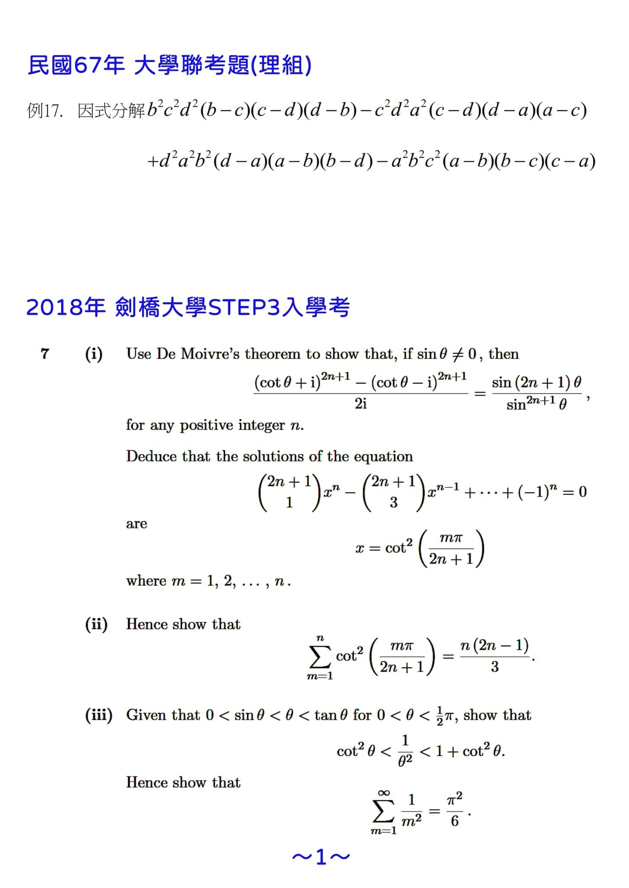
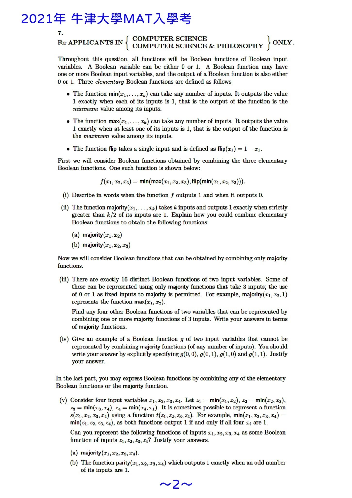
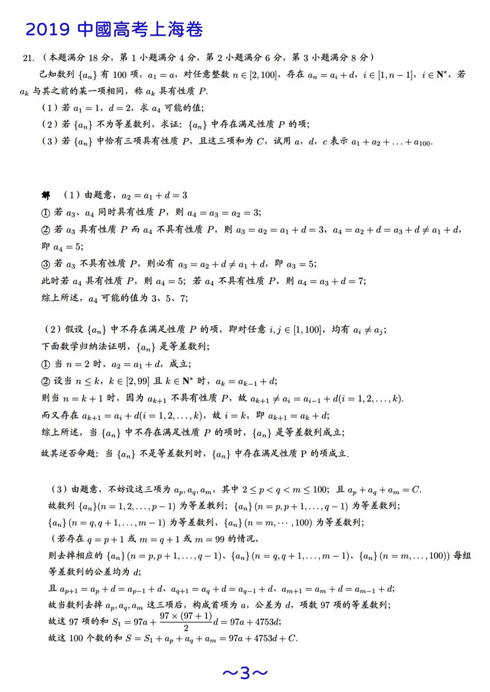
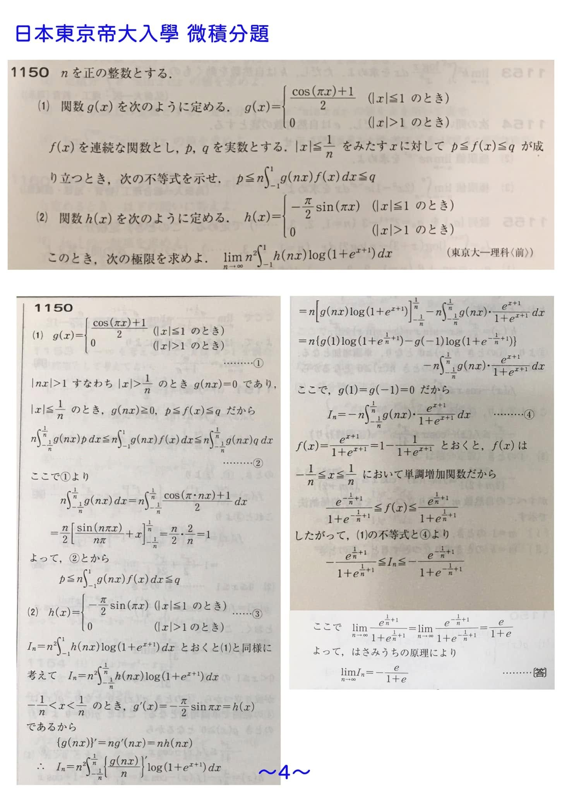
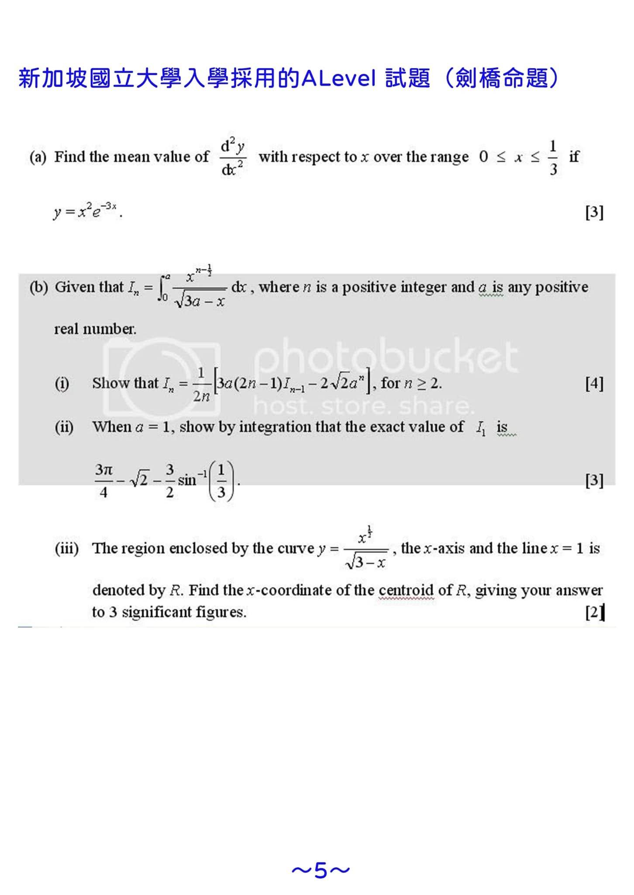

~獵豹數學教得太深嗎~
111年學測的數學給了台灣學子們一次小小的震撼教育！對這次號稱史上最難學測的評論文章不少，有許多家長也希望獵豹數學能針對這次學測做出分析與建議。
但獵豹規劃的新課程與活動太多，我的教務與教研工作太忙，實在分身乏術，深感抱歉！
評論111年學測數學這份考題，其實有很多面向：
針對功能性與鑑別度、難易分佈、知識點的分佈、題型與題性….
事實上如不從目前大學考選與申請制度面一起檢討，單獨評論此份試卷的難易度，就像是不看使用者身材而單獨評論一件衣服的大小一樣，無異緣木求魚！
如果從民國43年教育部責成四所大學院校組成的「大專聯招會」舉辦的聯招算起，「大學聯考」的歷史已近70年。
隨著社會發展，大學的功能與目標的變遷，錄取率的大幅提升，數學科難易自然也產生了起伏很大的消長。
早些年，台灣的大學是菁英走向，民國72年以前的數學試題以今天的學測、指考標準，是競賽等級。
民國50年的大學聯考，數學科近1/3的考生是零分！（當年參與大學聯考的學生佔比不到10%喔）。
下圖（1）是最近在獵豹F系列課程的範例 ，取自67年的大學聯考理組，同學們可以試著做做看（這道題在那個年代 稱不上難題）。
與鄰近的先進國家做比較，台灣的「學科能力測驗」類似日本大學入學考試中心舉辦的「大學入試公共學力測驗」，但日本僅以此測驗作為大學入學的第一階段門檻。
在日本七百多間大學中，排名前四十的精英型大學幾乎都設有自己命題的第二階段筆試，在難度上遠高於「公共學力測驗」！
然而直到幾年前台灣絕大多數的大學科系近70%的考生都以「學測」作為最終的入學測驗。
這導致了一些明顯荒謬的現象：台大電機系與X大哲學系用同一份數學卷挑選學生！
這種考選制度（不只數學科）不僅妨礙了精英學群程度的提升，也不只降低了甄選的效率。更影響了台灣未來科技產業的國際競爭力！
日前聯發科董事長蔡明介撰文向媒體投書，擔心科技人才荒，主張在高中教育階段就要扎好根，奠定數理教育基礎，並希望大學入學考試政策要能有效鑑別數理優秀人才。可喜的是教育主管機關及一些頂大的科系開始重視這現象並作了正確的因應。學測的數學卷分流為A、B兩卷。台大已約一半的科系設置了第二階段的筆試！
我個人的觀點，台灣學生K-12的基礎數學教育(幼兒園到高中）至少應在四個層面上作不同的分類、分群：學習弱勢、一般學群文法商取向、理工取向、數理資優等四個族群。每個族群適才適性的因材施教、差異化教學都很重要，它需要不同屬性的教學團體或機構分工合作。
獵豹科教的自我定位是精英屬性學群的培訓機構，我們的使命是提升國內頂尖學群的視野、格局、能力，提升國際競爭力！
我常跟學生說，「小確幸」並非不好，但在全球化的年代裡，我們的生活型態、生存方式無可避免地受到外界影響，這影響的源頭可能是跨界的、跨國的。過去這些年，我們看到台北饒河街成衣批發市場的沒落是因為跨國電商的崛起，AI搶了記者的工作，印度的軟體工程師全球搶工作…
而在全球化與資本主義互相激盪之下，「贏家通吃」衝擊著想要安穩過中產階級小確幸日子的人們！
未來世界，資源、能源、糧食..的爭奪會日趨激烈！
我跟學生說：全球化是閉門家中坐，禍從天上來！
你可能是全球化的受益者，也可能是受害者，端視你的「競爭力」！
觀察美國不難得知：國家競爭力取決於精英階層的競爭力。
觀察蘋果、谷歌、台積電、華為…便明白打造一個具有國際競爭力的企業需要大批的一流人才。
如果以國際頂尖人才的競爭而論，台灣菁英的數理教育還有很大的努力空間，也必須要有居安思危的前瞻思維！
https://vip.udn.com/vip/story/122609/6350443
眼光放在國內，只審視自己，無法瞭解台灣目前的處境也不知道我們應該努力的方向。
獵豹提供一些歐美與鄰國的頂尖大學入學考試題目，供關注獵豹的好朋友、關心精英教育的家長與同學們參考，「他山之石 可以為錯」，共勉之。
但獵豹規劃的新課程與活動太多，我的教務與教研工作太忙，實在分身乏術，深感抱歉！
評論111年學測數學這份考題，其實有很多面向：
針對功能性與鑑別度、難易分佈、知識點的分佈、題型與題性….
事實上如不從目前大學考選與申請制度面一起檢討，單獨評論此份試卷的難易度，就像是不看使用者身材而單獨評論一件衣服的大小一樣，無異緣木求魚！
如果從民國43年教育部責成四所大學院校組成的「大專聯招會」舉辦的聯招算起，「大學聯考」的歷史已近70年。
隨著社會發展，大學的功能與目標的變遷，錄取率的大幅提升，數學科難易自然也產生了起伏很大的消長。
早些年，台灣的大學是菁英走向，民國72年以前的數學試題以今天的學測、指考標準，是競賽等級。
民國50年的大學聯考，數學科近1/3的考生是零分！（當年參與大學聯考的學生佔比不到10%喔）。
下圖（1）是最近在獵豹F系列課程的範例 ，取自67年的大學聯考理組，同學們可以試著做做看（這道題在那個年代 稱不上難題）。
與鄰近的先進國家做比較，台灣的「學科能力測驗」類似日本大學入學考試中心舉辦的「大學入試公共學力測驗」，但日本僅以此測驗作為大學入學的第一階段門檻。
在日本七百多間大學中，排名前四十的精英型大學幾乎都設有自己命題的第二階段筆試，在難度上遠高於「公共學力測驗」！
然而直到幾年前台灣絕大多數的大學科系近70%的考生都以「學測」作為最終的入學測驗。
這導致了一些明顯荒謬的現象：台大電機系與X大哲學系用同一份數學卷挑選學生！
這種考選制度（不只數學科）不僅妨礙了精英學群程度的提升，也不只降低了甄選的效率。更影響了台灣未來科技產業的國際競爭力！
日前聯發科董事長蔡明介撰文向媒體投書，擔心科技人才荒，主張在高中教育階段就要扎好根，奠定數理教育基礎，並希望大學入學考試政策要能有效鑑別數理優秀人才。可喜的是教育主管機關及一些頂大的科系開始重視這現象並作了正確的因應。學測的數學卷分流為A、B兩卷。台大已約一半的科系設置了第二階段的筆試！
我個人的觀點，台灣學生K-12的基礎數學教育(幼兒園到高中）至少應在四個層面上作不同的分類、分群：學習弱勢、一般學群文法商取向、理工取向、數理資優等四個族群。每個族群適才適性的因材施教、差異化教學都很重要，它需要不同屬性的教學團體或機構分工合作。
獵豹科教的自我定位是精英屬性學群的培訓機構，我們的使命是提升國內頂尖學群的視野、格局、能力，提升國際競爭力！
我常跟學生說，「小確幸」並非不好，但在全球化的年代裡，我們的生活型態、生存方式無可避免地受到外界影響，這影響的源頭可能是跨界的、跨國的。過去這些年，我們看到台北饒河街成衣批發市場的沒落是因為跨國電商的崛起，AI搶了記者的工作，印度的軟體工程師全球搶工作…
而在全球化與資本主義互相激盪之下，「贏家通吃」衝擊著想要安穩過中產階級小確幸日子的人們！
未來世界，資源、能源、糧食..的爭奪會日趨激烈！
我跟學生說：全球化是閉門家中坐，禍從天上來！
你可能是全球化的受益者，也可能是受害者，端視你的「競爭力」！
觀察美國不難得知：國家競爭力取決於精英階層的競爭力。
觀察蘋果、谷歌、台積電、華為…便明白打造一個具有國際競爭力的企業需要大批的一流人才。
如果以國際頂尖人才的競爭而論，台灣菁英的數理教育還有很大的努力空間，也必須要有居安思危的前瞻思維！
https://vip.udn.com/vip/story/122609/6350443
眼光放在國內，只審視自己，無法瞭解台灣目前的處境也不知道我們應該努力的方向。
獵豹提供一些歐美與鄰國的頂尖大學入學考試題目，供關注獵豹的好朋友、關心精英教育的家長與同學們參考，「他山之石 可以為錯」，共勉之。
圖（1）
取自2018年劍橋大學入學考試STEP3的P7,這題是著名的「巴塞爾問題」
圖（2）
是2021年牛津大學入學考試MAT的P7 ,此題將「Boolean function」入題。
圖（3）
是2019年 中國大陸上海高考的壓軸題（數列級數）
圖（4）是東京大學的理科部入學考試微積分考題。
圖（5）是新加坡國立大學、南洋理工..所採用的A-Level考試中的微積分考題。
看完這些考題，我們會明白歐美的精英在數理的基本功方面也是下了苦工！
台灣高中的微積分是遠遠不足的！
https://www.facebook.com/groups/695697124716309/permalink/1055511638734854/




